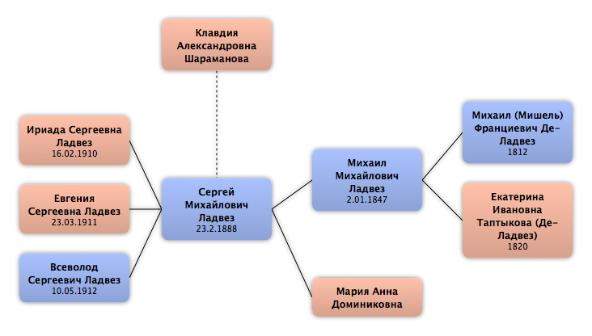

Домой
Домой
 Люди
Люди
 Семьи
Семьи
 Источники
Источники
 Диаграммы
Диаграммы
 Статистика
Статистика
Клавдия Александровна Шараманова

Контекст

Родители
| Отец | Дата рождения | Мать | Дата рождения |
|---|
Родители и дети
| Партнёры | Дата рождения | Дети |
|---|---|---|
 Сергей Михайлович Ладвез Сергей Михайлович Ладвез
|
23.2.1888 |
Ириада Сергеевна Ладвез
Евгения Сергеевна Ладвез
Всеволод Сергеевич Ладвез
|
События
Факты
Медиа
Примечание
Санкт-Петербургская мещанка
Источники
Родство
| Имя | Степень родства | Дата рождения | Место рождения | Дата смерти | Место смерти |
|---|---|---|---|---|---|
| Партнёров | |||||
| Муж | 23.2.1888 | Москва, Россия | 05.08.1929 | Москва, СССР | |
| Дети | |||||
| Дочь | 16.02.1910 | Санкт-Петербург, Россия | |||
| Дочь | 23.03.1911 | Москва, Россия | |||
| Сын | 10.05.1912 | Москва, Россия | |||
| Родители мужа (жены) | |||||
| Тёща / Свекровь | |||||
| Тесть / Свёкор | 2.01.1847 | Москва, Россия | |||
| Шурины и невестки | |||||
| Невестка | |||||
| Шурин | 23.09.1880 | ||||
| Племянники и племянницы | |||||
| Жена племянника | 23.10.1899 | Москва, Россия | |||
| Муж племянницы | 21.07.1900 | Москва, Россия | 1947 | ||
| Жена племянника | 22.09.1902 | Тифлис (Тбилиси), Грузия | |||
| Жена племянника | 03.12.1905 | Москва, Россия | |||
| Жена племянника | 10.04.1907 | Двинск, Россия | |||
| Внучатые племянники и внучатые племянницы | |||||
| Муж внучатой племянницы | |||||
| Жена внучатого племянника | |||||
| Муж внучатой племянницы | |||||
| Жена внучатого племянника | |||||
| Жена внучатого племянника | |||||
| Муж внучатой племянницы | 22.08.1926 | Хабаровск, СССР | 08.05.2006 | Санкт-Петербург, Россия | |